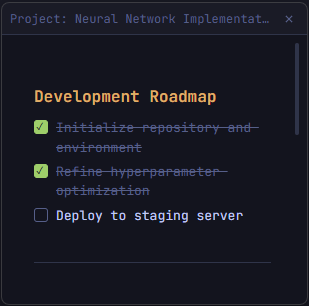

Markdown-first editor
Write with full Markdown support — headings, bold, italic, strikethrough, inline code, and code blocks. The toolbar is always one click away.
# Title
**bold** · *italic* · `code`
A keyboard-first note tool for Windows developers.
Markdown, tabs, floating sticky notes. No cloud. No clutter.


No onboarding. No workspace setup. One shortcut and you're writing.
Write with full Markdown support — headings, bold, italic, strikethrough, inline code, and code blocks. The toolbar is always one click away.
# Title
**bold** · *italic* · `code`
Launch any note as a compact, independent floating window. Keep your most important data always on top while you work in other apps.
noteflow --sticky "tasks"
Add interactive task lists to any note. Check off items as you go. Completed tasks are visually struck through so the remaining work stays clear.
☑ Deploy to production
☐ Write unit tests
Open multiple notes at once with a tabbed interface. Switch context instantly without losing your place. Tabs persist between sessions.
Note Questions +
Your notes never leave your machine. No accounts, no sync, no telemetry. Everything is stored locally on Windows. Period.
%APPDATA%\noteflow\notes\
Dark theme, monospace font, minimal chrome. Feels at home next to your IDE. Not another Notion clone with a light grey background.
theme: dark · font: mono
Clean. Fast. Exactly what you need — nothing more.
| Feature | NoteFlow | Sticky Notes | Notepad |
|---|---|---|---|
| Markdown support | ✓ | ✗ | ✗ |
| Sticky notes | ✓ | ✓ | ✗ |
| Multi-tab editing | ✓ | ✗ | ✗ |
| Search across notes | ✓ | ✗ | ✗ |
| Completely local (no cloud) | ✓ | ✗ | ✓ |
| Developer aesthetic / dark mode | ✓ | ✗ | ✗ |
| Free & open source | ✓ | ✓ | ✓ |
Download the .exe installer from GitHub Releases. Run it, and NoteFlow opens in seconds — no account, no setup wizard, no telemetry.
.exe installer from the button below
Windows 10 / 11 · x64 · ~80 MB
$ git clone https://github.com/yagoid/noteflow.git
# or just download the .exe from Releases
$ cd noteflow && npm install
$ npm run dev
✓ NoteFlow running on localhost